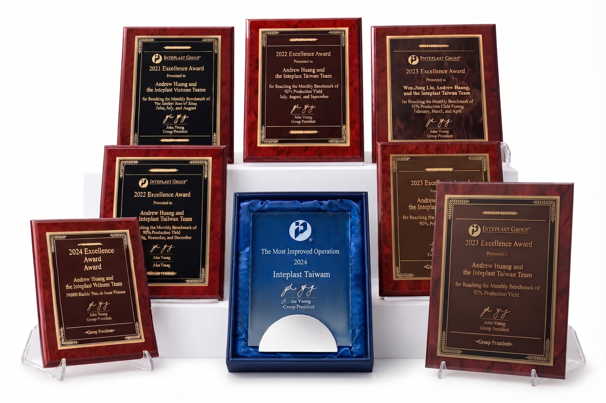
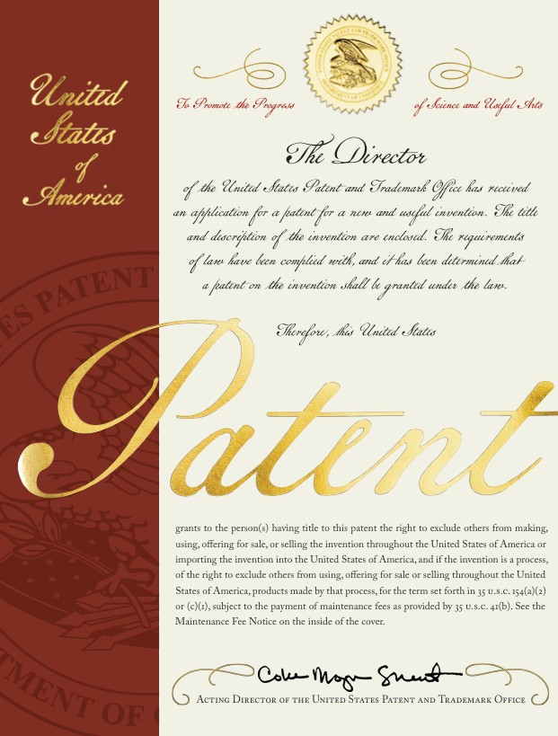

INTEPLAST
GROUP
全球塑膠加工技術、製造管理與跨市場服務網絡。
美國總部｜北美、亞洲、歐洲製造版圖
前往 INTEPLAST GROUP 官網在新港，我們把穩定品質、精密製程與環境思維，做成全球市場可以信賴的日常。臺灣營德持續用更好的製造，回應每一個正在前進的需求。
臺灣營德站在新港，串連 INTEPLAST GROUP 的全球加工經驗與台塑公司的原料、廠區資源；把三方力量，轉化為客戶可依賴的製造能力。
全球塑膠加工技術、製造管理與跨市場服務網絡。
美國總部｜北美、亞洲、歐洲製造版圖
前往 INTEPLAST GROUP 官網在嘉義新港，把原料、技術與製程整合為穩定可靠的薄膜與軟包裝解決方案。
共同投資夥伴：INTEPLAST GROUP、台灣塑膠公司、長庚生物科技
與臺灣營德聯繫穩定的原料資源與台塑企業新港廠區產業基礎，支撐高效率且穩定的生產配置。
台灣塑膠公司｜台塑企業成員
前往台灣塑膠公司官網臺灣營德的製造故事，源自台塑塑膠加工組。1983 年，加工組於高雄前鎮廠起步，開始生產購物袋；1984 年，市場袋正式加入產品線，逐步累積袋品製造的基礎與經驗。
1989 年，新港廠整地擴建；1991 年正式投產，並啟用全自動拌料輸送系統。隨著市場需求與設備能力提升，產品線也持續延伸。
2004 年，前鎮廠遷廠合併，新港成為主要生產基地；2008 年，全球產品配置重整，讓製造資源更聚焦於具技術與品質優勢的產品。
2014 年，台塑塑膠加工組獨立成立「臺灣營德股份有限公司」。臺灣營德延續既有的製造經驗，結合 INTEPLAST GROUP 的全球技術與營運管理，並持續作為台塑相關企業的一員，開啟新的篇章。
從前鎮的第一只購物袋，到新港的持續精進；我們把累積多年的製造經驗，轉化為面向未來的可靠承諾。EXPERIENCE · PROGRESS
故事始於高雄前鎮廠，從袋品生產出發，逐步發展為今日的製造基地。
臺灣營德連續五年獲頒 INTEPLAST GROUP Excellence Award 卓越獎。


 Patented technology
Patented technology
Scale Sheet 的單張抽取結構已取得美國專利。取用一張就是一張，不必翻找、不會沾黏，讓秤重與分裝的每一次動作都省下時間。
從自動化生產、跨市場產品開發到循環再利用，我們把三十餘年的現場經驗轉化為客戶可以信賴的製造能力。
從全自動拌料與原料空輸，到 PLC 吹膜控制與精密點斷熱封，每一道製程都為穩定品質與良率而設計。
從捲膜、清潔袋、拉繩袋到醫療包裝與冷凍密實袋，臺灣營德服務台灣、日本、美洲與東南亞等市場。
採用環保水性墨、建構廢膜回收再生系統，並推出取得國家環保標章認證的綠色產品。
新港基地將原料輸送、吹膜、印刷、製袋與品質控管串聯為完整流程，讓品質不是最後一道檢查，而是每一道製程的共同標準。